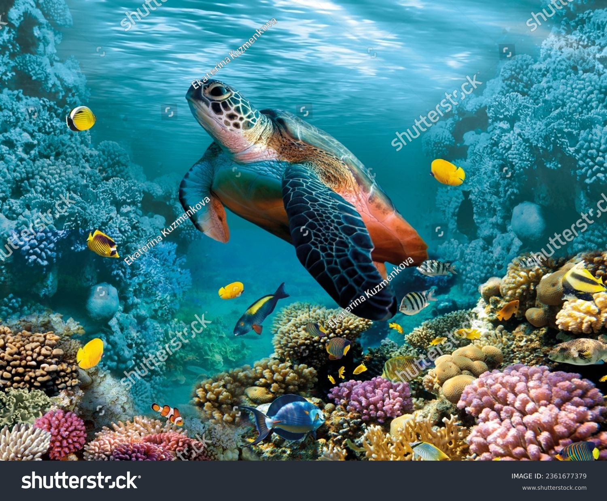

At Khulna Government Model School and College (KGMSC), our goals and targets guide every academic, administrative, and co-curricular activity. We believe that clear goals create a strong direction, and well-defined targets help us measure progress and success.
The primary goal of khulna government model school and college is to provide quality government education that develops students academically, morally, socially, and intellectually. Our institution is committed to shaping students into confident, skilled, and responsible citizens of Bangladesh.
The educational goals of KGMSC focus on building a strong academic foundation while encouraging critical thinking and creativity.
Our key educational goals include:
1.Ensuring strong understanding of academic subjects
2.Improving learning outcomes through effective teaching
3.Encouraging analytical and logical thinking
4.Supporting students according to their individual abilities
At khulna government model school and college, education is designed to prepare students not only for examinations but also for lifelong learning.
One of the major targets of KGMSC is achieving and maintaining academic excellence at both school and college levels. We continuously work to improve teaching quality, assessment methods, and student performance.
Our academic targets include:
1.Consistent improvement in examination results
2.High success rate in public examinations
3.Strong preparation for higher education
4.Reducing learning gaps among students
KGMSC believes that academic excellence is the foundation of student success.
At khulna government model school and college, moral education is as important as academic learning. One of our core goals is to develop students with strong character, ethics, and discipline.
Our moral development goals focus on:
1.Honesty and integrity
2.Respect for teachers, parents, and peers
3.Responsibility and self-discipline
4.Social awareness and empathy
KGMSC aims to produce students who are good human beings as well as successful learners.
Maintaining discipline is a major target of KGMSC. A disciplined environment ensures effective learning and personal growth.
Our discipline-related targets include:
1.Regular attendance and punctuality
2.Respectful behavior on campus
3.Following institutional rules and guidelines
4.Developing self-control and responsibility
At khulna government model school and college, discipline is practiced with fairness and care.
One of the key goals of KGMSC is to ensure a student-centered education system. We aim to understand student needs and support them accordingly.
Our student-focused goals include:
1.Equal learning opportunities for all students
2.Individual academic support when needed
3.Encouraging creativity and curiosity
4.Building confidence and communication skills
This approach helps students grow academically and personally at kgmsc.
Teachers play a vital role in achieving institutional goals. Khulna government model school and college sets clear targets for maintaining high teaching standards.
Our teacher-related goals include:
1.Continuous professional development
2.Effective and modern teaching methods
3.Strong teacher-student relationships
4.Mentorship and academic guidance
KGMSC believes that skilled teachers lead to successful students.
Education at KGMSC goes beyond classrooms. One of our major targets is the development of students through co-curricular and extracurricular activities.
Our co-curricular targets include:
1.Active participation in BNCC and Scout programs
2.Encouraging debating, science, and computer clubs
3.Promoting cultural and creative activities
4.Developing leadership and teamwork skills
These activities help students become confident and well-rounded individuals.
Khulna Government Model School and College aims to integrate modern technology into education to enhance learning experiences.
Our technology-related goals include:
1.Using digital tools in teaching
2.Improving computer literacy among students
3.Encouraging responsible use of technology
4.Preparing students for a digital future
KGMSC recognizes the importance of technology in modern education.
Providing a safe and supportive learning environment is a key goal of khulna government model school and college.
We aim to ensure:
1.A respectful and inclusive campus
2.Emotional and academic support for students
3.Fair treatment of all learners
4.Positive student-teacher interactions
A supportive environment helps students perform with confidence at KGMSC.
KGMSC believes that education improves when parents and the community are involved. Strengthening this relationship is an important target.
Our engagement targets include:
1.Regular parent-teacher communication
2.Transparency in academic progress
3.Community cooperation in educational activities
This collaboration supports student success at khulna government model school and college.
As a government institution, KGMSC has a responsibility to contribute to national development.
Our national goals include:
1.Promoting patriotism and civic values
2.Encouraging respect for national heritage
3.Preparing responsible citizens
4.Supporting government education objectives
Khulna government model school and college aims to serve the nation through education.
The long-term targets of KGMSC focus on continuous improvement and sustainability.
These targets include:
1.Maintaining high academic standards
2.Improving infrastructure and facilities
3.Enhancing teaching and learning quality
4.Strengthening institutional reputation
KGMSC is committed to long-term excellence in education.
Success at khulna government model school and college is measured not only by exam results but also by student behavior, confidence, and social responsibility.
We evaluate success through:
1.Academic performance
2.Student discipline and values
3.Participation in activities
4.Parent and community feedback
This holistic approach ensures balanced development.
KGMSC continuously reviews its goals and targets to adapt to changing educational needs.
We remain committed to:
1.Improving teaching strategies
2.Supporting student growth
3.Upholding discipline and values
4.Delivering quality government education
The goals and targets of Khulna Government Model School and College (KGMSC) reflect our strong commitment to academic excellence, moral development, discipline, and holistic student growth. Through clear objectives and dedicated efforts, kgmsc continues to shape confident, responsible, and successful students for the future.
Choosing khulna government model school and college means choosing a focused, goal-driven, and quality educational journey.